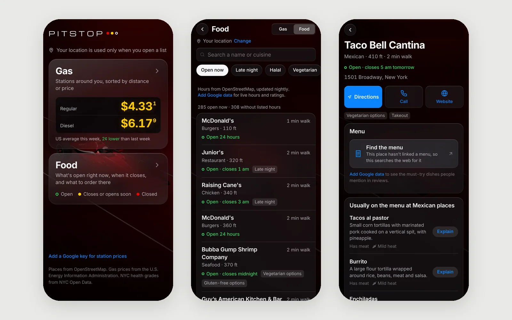
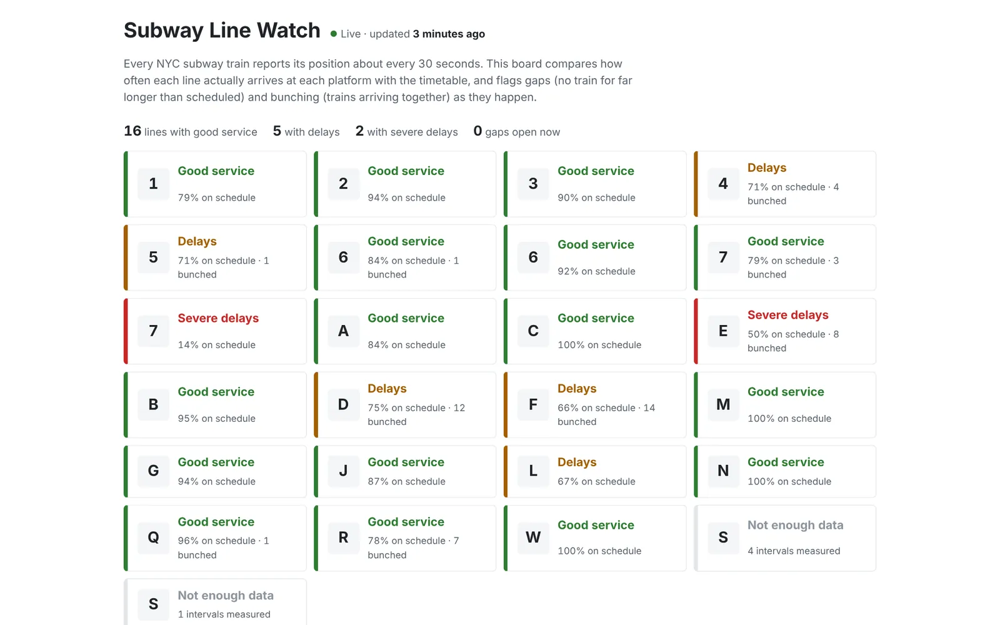
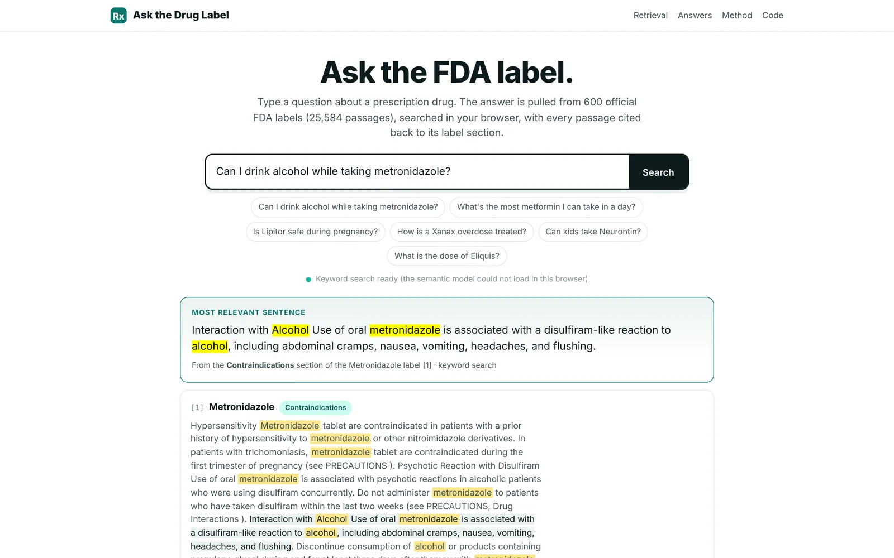
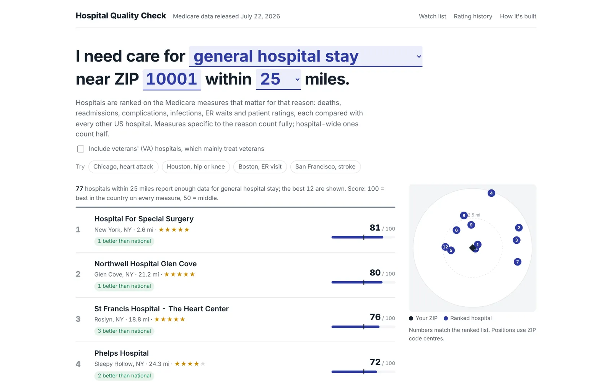
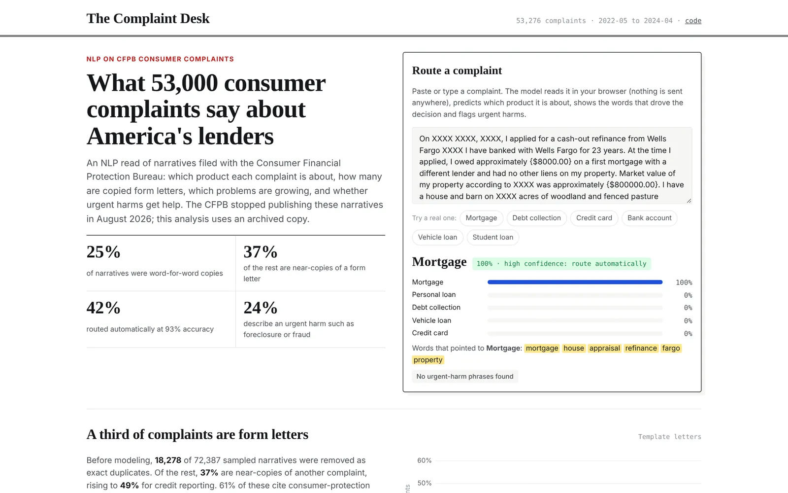
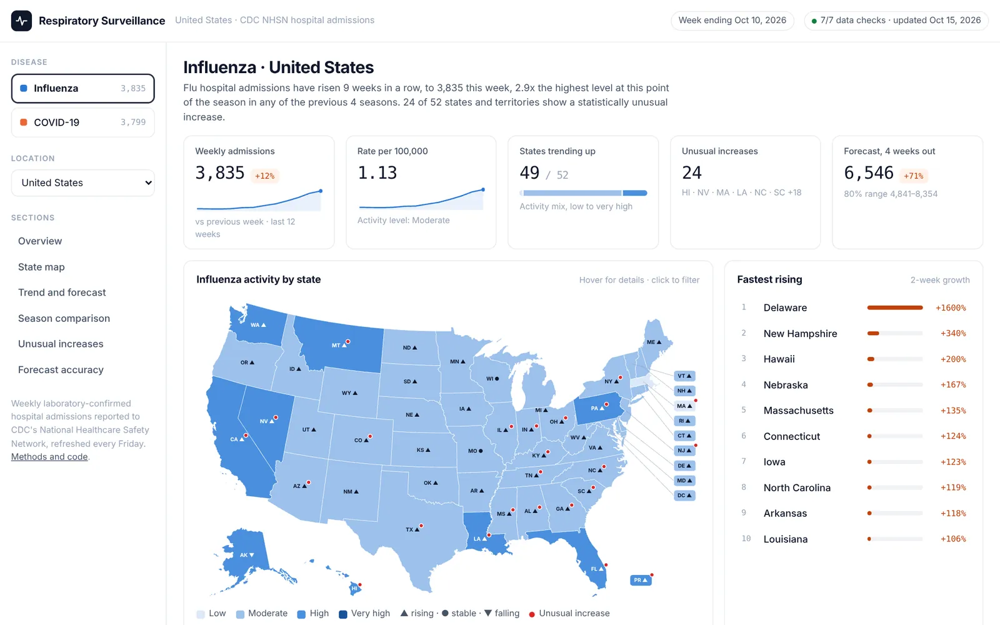
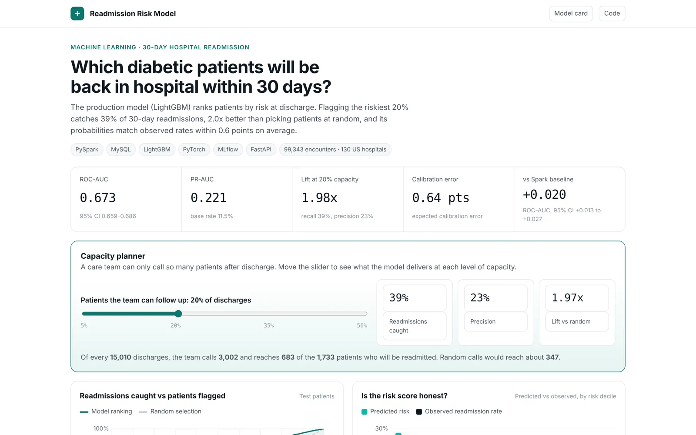
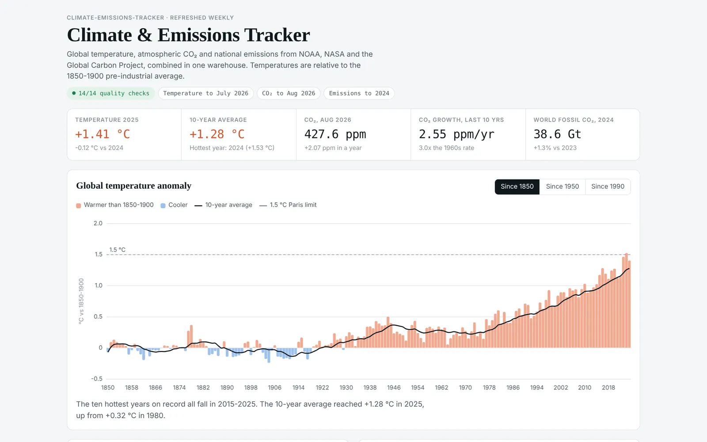
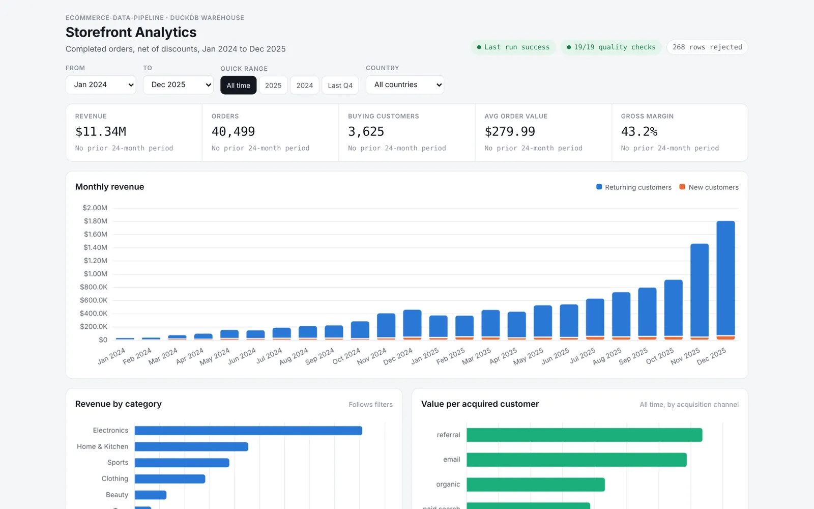

Pitstop
OpenCodeA phone app for when you're somewhere new: what's open near you and when it closes, what to order there, and this week's gas price. Works in your own units and currency, offline, and with EV charging; still an early version that keeps improving.
JavaScript, three.js, OpenStreetMap, EIA and NYC Open Data, GitHub Actions
Subway Line Watch
OpenCodeSpots NYC subway delays as they form, from every train's live position streamed through Kafka and Spark.
Kafka, Spark Structured Streaming, GTFS-realtime, Docker
Ask the Drug Label
OpenCodeAnswers questions about prescription drugs from their FDA labels, citing the passage, or says when the label doesn't cover it.
Python, BM25, sentence embeddings, Qwen2.5, NLI grading, transformers.js
Hospital Quality Check
OpenCodeRanks nearby hospitals on the Medicare measures that matter for your reason for care, from a tested dbt warehouse.
dbt, Dagster, DuckDB, SQL, CMS and Census APIs
The Complaint Desk
OpenCodeReads 53,000 complaints about US lenders: routes each to a product, finds form letters and flags urgent harm.
Python, scikit-learn, DistilBERT, topic modeling, JavaScript
Respiratory Surveillance
OpenCodeWeekly flu and COVID-19 hospital admissions for every state, with outbreak alerts and four-week forecasts.
Python, DuckDB, SQL, LightGBM quantile models, GitHub Actions
Readmission Risk Model
OpenCodePredicts which diabetic patients will be back in hospital within 30 days, so a care team calls the right people first.
PySpark, MySQL, LightGBM, PyTorch, MLflow, FastAPI, Docker
Climate and Emissions Tracker
OpenCodeNOAA and NASA temperatures, Mauna Loa CO₂ and emissions for 218 countries in one warehouse, rebuilt weekly.
Python, DuckDB, SQL, data quality checks, GitHub Actions
Storefront Analytics
OpenCodeTurns messy order exports into a star-schema warehouse that answers a shop owner's questions, with every rejected row audited.
Python, DuckDB, SQL, star schema, cohort and RFM analysis